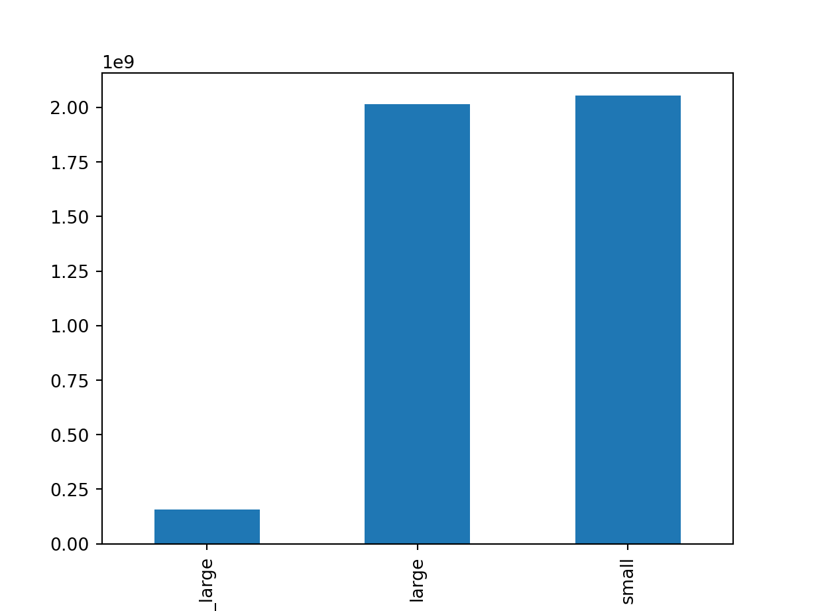

When you get a new DataFrame to work with, the first thing you need to do is explore it and see what it contains. There are several useful methods and attributes for this.
head() returns the first few rows (the “head” of the DataFrame).
info() shows information on each of the columns, such as the data type and number of missing values.
shape returns the number of rows and columns of the DataFrame.
describe() calculates a few summary statistics for each column. homelessness is a DataFrame containing estimates of homelessness in each U.S. state in 2018. The individual column is the number of homeless individuals not part of a family with children. The family_members column is the number of homeless individuals part of a family with children. The state_pop column is the state’s total population.
import pandas as pdhomelessness = pd.read_csv('data/homelessness.csv', index_col =0)# Print the head of the homelessness dataprint(homelessness.head())
region state individuals family_members state_pop
0 East South Central Alabama 2570.0 864.0 4887681
1 Pacific Alaska 1434.0 582.0 735139
2 Mountain Arizona 7259.0 2606.0 7158024
3 West South Central Arkansas 2280.0 432.0 3009733
4 Pacific California 109008.0 20964.0 39461588
# Print information about homelessnessprint(homelessness.info())
To better understand DataFrame objects, it’s useful to know that they consist of three components, stored as attributes:
.values: A two-dimensional NumPy array of values.
.columns: An index of columns: the column names.
.index: An index for the rows: either row numbers or row names. You can usually think of indexes as a list of strings or numbers, though the pandas Index data type allows for more sophisticated options. (These will be covered later in the course.)
# Print the values of homelessnessprint(homelessness.values)
Finding interesting bits of data in a DataFrame is often easier if you change the order of the rows. You can sort the rows by passing a column name to .sort_values().
In cases where rows have the same value (this is common if you sort on a categorical variable), you may wish to break the ties by sorting on another column. You can sort on multiple columns in this way by passing a list of column names.
By combining .sort_values() with .head(), you can answer questions in the form, “What are the top cases where…?”.
# Sort homelessness by individualshomelessness_ind = homelessness.sort_values('individuals')# Print the top few rowsprint(homelessness_ind.head())
region state individuals family_members state_pop
50 Mountain Wyoming 434.0 205.0 577601
34 West North Central North Dakota 467.0 75.0 758080
7 South Atlantic Delaware 708.0 374.0 965479
39 New England Rhode Island 747.0 354.0 1058287
45 New England Vermont 780.0 511.0 624358
# Sort homelessness by descending family membershomelessness_fam = homelessness.sort_values('family_members', ascending =False)# Print the top few rowsprint(homelessness_fam.head())
region state individuals family_members state_pop
32 Mid-Atlantic New York 39827.0 52070.0 19530351
4 Pacific California 109008.0 20964.0 39461588
21 New England Massachusetts 6811.0 13257.0 6882635
9 South Atlantic Florida 21443.0 9587.0 21244317
43 West South Central Texas 19199.0 6111.0 28628666
# Sort homelessness by region, then descending family membershomelessness_reg_fam = homelessness.sort_values(['region', 'family_members'], ascending = [True, False])# Print the top few rowsprint(homelessness_reg_fam.head())
region state individuals family_members state_pop
13 East North Central Illinois 6752.0 3891.0 12723071
35 East North Central Ohio 6929.0 3320.0 11676341
22 East North Central Michigan 5209.0 3142.0 9984072
49 East North Central Wisconsin 2740.0 2167.0 5807406
14 East North Central Indiana 3776.0 1482.0 6695497
Subsetting columns
When working with data, you may not need all of the variables in your dataset. Square brackets ([]) can be used to select only the columns that matter to you in an order that makes sense to you. To select only “col_a” of the DataFrame df, use
df["col_a"]
To select “col_a” and “col_b” of df, use
df[["col_a", "col_b"]]
# Select the individuals columnindividuals = homelessness['individuals']# Print the head of the resultprint(individuals.head())
# Select the state and family_members columnsstate_fam = homelessness[['state', 'family_members']]# Print the head of the resultprint(state_fam.head())
state family_members
0 Alabama 864.0
1 Alaska 582.0
2 Arizona 2606.0
3 Arkansas 432.0
4 California 20964.0
# Select only the individuals and state columns, in that orderind_state = homelessness[['individuals', 'state']]# Print the head of the resultprint(ind_state.head())
individuals state
0 2570.0 Alabama
1 1434.0 Alaska
2 7259.0 Arizona
3 2280.0 Arkansas
4 109008.0 California
Subsetting rows
A large part of data science is about finding which bits of your dataset are interesting. One of the simplest techniques for this is to find a subset of rows that match some criteria. This is sometimes known as filtering rows or selecting rows.
There are many ways to subset a DataFrame, perhaps the most common is to use relational operators to return True or False for each row, then pass that inside square brackets.
# Filter for rows where individuals is greater than 10000ind_gt_10k = homelessness[homelessness['individuals'] >10000]# See the resultprint(ind_gt_10k)
region state individuals family_members state_pop
4 Pacific California 109008.0 20964.0 39461588
9 South Atlantic Florida 21443.0 9587.0 21244317
32 Mid-Atlantic New York 39827.0 52070.0 19530351
37 Pacific Oregon 11139.0 3337.0 4181886
43 West South Central Texas 19199.0 6111.0 28628666
47 Pacific Washington 16424.0 5880.0 7523869
# Filter for rows where region is Mountainmountain_reg = homelessness[homelessness['region'] =='Mountain']# See the resultprint(mountain_reg)
# Filter for rows where family_members is less than 1000 # and region is Pacificfam_lt_1k_pac = homelessness[(homelessness['region'] =='Pacific') & (homelessness['family_members']<1000 )]# See the resultprint(fam_lt_1k_pac)
region state individuals family_members state_pop
1 Pacific Alaska 1434.0 582.0 735139
Subsetting rows by categorical variables
Subsetting data based on a categorical variable often involves using the “or” operator (|) to select rows from multiple categories. This can get tedious when you want all states in one of three different regions, for example. Instead, use the .isin() method, which will allow you to tackle this problem by writing one condition instead of three separate ones.
# Subset for rows in South Atlantic or Mid-Atlantic regionssouth_mid_atlantic = homelessness[homelessness['region'].isin(["South Atlantic", "Mid-Atlantic"])]# See the resultprint(south_mid_atlantic)
region state ... family_members state_pop
7 South Atlantic Delaware ... 374.0 965479
8 South Atlantic District of Columbia ... 3134.0 701547
9 South Atlantic Florida ... 9587.0 21244317
10 South Atlantic Georgia ... 2556.0 10511131
20 South Atlantic Maryland ... 2230.0 6035802
30 Mid-Atlantic New Jersey ... 3350.0 8886025
32 Mid-Atlantic New York ... 52070.0 19530351
33 South Atlantic North Carolina ... 2817.0 10381615
38 Mid-Atlantic Pennsylvania ... 5349.0 12800922
40 South Atlantic South Carolina ... 851.0 5084156
46 South Atlantic Virginia ... 2047.0 8501286
48 South Atlantic West Virginia ... 222.0 1804291
[12 rows x 5 columns]
# The Mojave Desert statescanu = ["California", "Arizona", "Nevada", "Utah"]# Filter for rows in the Mojave Desert statesmojave_homelessness = homelessness[homelessness['state'].isin(canu)]# See the resultprint(mojave_homelessness)
region state individuals family_members state_pop
2 Mountain Arizona 7259.0 2606.0 7158024
4 Pacific California 109008.0 20964.0 39461588
28 Mountain Nevada 7058.0 486.0 3027341
44 Mountain Utah 1904.0 972.0 3153550
Adding new columns
You aren’t stuck with just the data you are given. Instead, you can add new columns to a DataFrame. This has many names, such as transforming, mutating, and feature engineering.
You can create new columns from scratch, but it is also common to derive them from other columns, for example, by adding columns together or by changing their units.
homelessness is available and pandas is loaded as pd.
# Add total col as sum of individuals and family_membershomelessness['total'] = homelessness['family_members'] + homelessness['individuals']# Add p_individuals col as proportion of total that are individualshomelessness['p_individuals'] = homelessness['individuals']/homelessness['total'] # See the resultprint(homelessness.head())
region state ... total p_individuals
0 East South Central Alabama ... 3434.0 0.748398
1 Pacific Alaska ... 2016.0 0.711310
2 Mountain Arizona ... 9865.0 0.735834
3 West South Central Arkansas ... 2712.0 0.840708
4 Pacific California ... 129972.0 0.838704
[5 rows x 7 columns]
Combo-attack!
You’ve seen the four most common types of data manipulation: sorting rows, subsetting columns, subsetting rows, and adding new columns. In a real-life data analysis, you can mix and match these four manipulations to answer a multitude of questions.
In this exercise, you’ll answer the question, “Which state has the highest number of homeless individuals per 10,000 people in the state?” Combine your new pandas skills to find out.
# Create indiv_per_10k col as homeless individuals per 10k state pophomelessness["indiv_per_10k"] =10000* homelessness['individuals']/ homelessness['state_pop']# Subset rows for indiv_per_10k greater than 20high_homelessness = homelessness[homelessness["indiv_per_10k"] >20]# Sort high_homelessness by descending indiv_per_10khigh_homelessness_srt = high_homelessness.sort_values('indiv_per_10k', ascending =False)# From high_homelessness_srt, select the state and indiv_per_10k colsresult = high_homelessness_srt[['state', 'indiv_per_10k']]# See the resultprint(result)
state indiv_per_10k
8 District of Columbia 53.738381
11 Hawaii 29.079406
4 California 27.623825
37 Oregon 26.636307
28 Nevada 23.314189
47 Washington 21.829195
32 New York 20.392363
Aggregating DataFrames
Mean and median
Summary statistics are exactly what they sound like - they summarize many numbers in one statistic. For example, mean, median, minimum, maximum, and standard deviation are summary statistics. Calculating summary statistics allows you to get a better sense of your data, even if there’s a lot of it.
sales is available and pandas is loaded as pd.
sales = pd.read_csv("data/sales_subset.csv", index_col =0)# Print the head of the sales DataFrameprint(sales.head())
store type department ... temperature_c fuel_price_usd_per_l unemployment
0 1 A 1 ... 5.727778 0.679451 8.106
1 1 A 1 ... 8.055556 0.693452 8.106
2 1 A 1 ... 16.816667 0.718284 7.808
3 1 A 1 ... 22.527778 0.748928 7.808
4 1 A 1 ... 27.050000 0.714586 7.808
[5 rows x 9 columns]
# Print the info about the sales DataFrameprint(sales.info())
# Print the mean of weekly_salesprint(sales['weekly_sales'].mean())
23843.95014850566
# Print the median of weekly_salesprint(sales['weekly_sales'].median())
12049.064999999999
Summarizing dates
Summary statistics can also be calculated on date columns that have values with the data type datetime64. Some summary statistics — like mean — don’t make a ton of sense on dates, but others are super helpful, for example, minimum and maximum, which allow you to see what time range your data covers.
sales is available and pandas is loaded as pd.
# Print the maximum of the date columnsales["date"] = pd.to_datetime(sales["date"])print(sales['date'].max())
2012-10-26 00:00:00
# Print the minimum of the date columnprint(sales['date'].min())
2010-02-05 00:00:00
Efficient summaries
While pandas and NumPy have tons of functions, sometimes, you may need a different function to summarize your data.
The .agg() method allows you to apply your own custom functions to a DataFrame, as well as apply functions to more than one column of a DataFrame at once, making your aggregations super-efficient. For example,
df['column'].agg(function)
In the custom function for this exercise, “IQR” is short for inter-quartile range, which is the 75th percentile minus the 25th percentile. It’s an alternative to standard deviation that is helpful if your data contains outliers.
sales is available and pandas is loaded as pd.
import numpy as np# A custom IQR functiondef iqr(column):return column.quantile(0.75) - column.quantile(0.25)# Update to print IQR of temperature_c, fuel_price_usd_per_l, & unemploymentprint(sales[["temperature_c", "fuel_price_usd_per_l", "unemployment"]].agg(iqr))
# Update to print IQR and median of temperature_c, fuel_price_usd_per_l, & unemploymentprint(sales[["temperature_c", "fuel_price_usd_per_l", "unemployment"]].agg([iqr, np.median]))
Cumulative statistics can also be helpful in tracking summary statistics over time. In this exercise, you’ll calculate the cumulative sum and cumulative max of a department’s weekly sales, which will allow you to identify what the total sales were so far as well as what the highest weekly sales were so far.
A DataFrame called sales_1_1 has been created for you, which contains the sales data for department 1 of store 1. pandas is loaded as pd.
# Sort sales_1_1 by datesales_1_1 = sales.sort_values(by ="date")# Get the cumulative sum of weekly_sales, add as cum_weekly_sales colsales_1_1['cum_weekly_sales'] = sales_1_1['weekly_sales'].cumsum()# Get the cumulative max of weekly_sales, add as cum_max_sales colsales_1_1['cum_max_sales'] = sales_1_1['weekly_sales'].cummax()# See the columns you calculatedprint(sales_1_1[["date", "weekly_sales", "cum_weekly_sales", "cum_max_sales"]].head())
Removing duplicates is an essential skill to get accurate counts because often, you don’t want to count the same thing multiple times. In this exercise, you’ll create some new DataFrames using unique values from sales.
sales is available and pandas is imported as pd.
# Drop duplicate store/type combinationsstore_types = sales.drop_duplicates(subset = ['store', 'type'])print(store_types.head())
store type department ... temperature_c fuel_price_usd_per_l unemployment
0 1 A 1 ... 5.727778 0.679451 8.106
901 2 A 1 ... 4.550000 0.679451 8.324
1798 4 A 1 ... 6.533333 0.686319 8.623
2699 6 A 1 ... 4.683333 0.679451 7.259
3593 10 B 1 ... 12.411111 0.782478 9.765
[5 rows x 9 columns]
# Drop duplicate store/department combinationsstore_depts = sales.drop_duplicates(subset = ['store', 'department'])print(store_depts.head())
store type department ... temperature_c fuel_price_usd_per_l unemployment
0 1 A 1 ... 5.727778 0.679451 8.106
12 1 A 2 ... 5.727778 0.679451 8.106
24 1 A 3 ... 5.727778 0.679451 8.106
36 1 A 4 ... 5.727778 0.679451 8.106
48 1 A 5 ... 5.727778 0.679451 8.106
[5 rows x 9 columns]
# Subset the rows where is_holiday is True and drop duplicate datesholiday_dates = sales[sales['is_holiday']].drop_duplicates('date')# Print date col of holiday_datesprint(holiday_dates['date'])
Counting is a great way to get an overview of your data and to spot curiosities that you might not notice otherwise. In this exercise, you’ll count the number of each type of store and the number of each department number using the DataFrames you created in the previous exercise:
# Drop duplicate store/type combinations
store_types = sales.drop_duplicates(subset=["store", "type"])
# Drop duplicate store/department combinations
store_depts = sales.drop_duplicates(subset=["store", "department"])
The store_types and store_depts DataFrames you created in the last exercise are available, and pandas is imported as pd.
# Count the number of stores of each typestore_counts = store_types.value_counts('type')print(store_counts)
type
A 11
B 1
dtype: int64
# Get the proportion of stores of each typestore_props = store_types.value_counts('type', normalize =True)print(store_props)
type
A 0.916667
B 0.083333
dtype: float64
# Count the number of each department number and sortdept_counts_sorted = store_depts['department'].value_counts( sort =True)print(dept_counts_sorted)
# Get the proportion of departments of each number and sortdept_props_sorted = store_depts['department'].value_counts( sort =True, normalize=True)print(dept_props_sorted)
What percent of sales occurred at each store type?
While .groupby() is useful, you can calculate grouped summary statistics without it.
Walmart distinguishes three types of stores: “supercenters,” “discount stores,” and “neighborhood markets,” encoded in this dataset as type “A,” “B,” and “C.” In this exercise, you’ll calculate the total sales made at each store type, without using .groupby(). You can then use these numbers to see what proportion of Walmart’s total sales were made at each type.
sales is available and pandas is imported as pd.
# Calc total weekly salessales_all = sales["weekly_sales"].sum()# Subset for type A stores, calc total weekly salessales_A = sales[sales["type"] =="A"]["weekly_sales"].sum()# Subset for type B stores, calc total weekly salessales_B = sales[sales["type"] =="B"]["weekly_sales"].sum()# Subset for type C stores, calc total weekly salessales_C = sales[sales["type"] =="C"]["weekly_sales"].sum()# Get proportion for each typesales_propn_by_type = [sales_A, sales_B, sales_C] / sales_allprint(sales_propn_by_type)
[0.9097747 0.0902253 0. ]
Calculations with .groupby()
The .groupby() method makes life much easier. In this exercise, you’ll perform the same calculations as last time, except you’ll use the .groupby() method. You’ll also perform calculations on data grouped by two variables to see if sales differ by store type depending on if it’s a holiday week or not.
sales is available and pandas is loaded as pd.
# Group by type; calc total weekly salessales_by_type = sales.groupby("type")["weekly_sales"].sum()# Get proportion for each typesales_propn_by_type = sales_by_type /sum(sales['weekly_sales'])print(sales_propn_by_type)
type
A 0.909775
B 0.090225
Name: weekly_sales, dtype: float64
# From previous stepsales_by_type = sales.groupby("type")["weekly_sales"].sum()# Group by type and is_holiday; calc total weekly salessales_by_type_is_holiday = sales.groupby(["type", 'is_holiday'])["weekly_sales"].sum()print(sales_by_type_is_holiday)
type is_holiday
A False 2.336927e+08
True 2.360181e+04
B False 2.317678e+07
True 1.621410e+03
Name: weekly_sales, dtype: float64
Multiple grouped summaries
Earlier in this chapter, you saw that the .agg() method is useful to compute multiple statistics on multiple variables. It also works with grouped data. NumPy, which is imported as np, has many different summary statistics functions, including: np.min, np.max, np.mean, and np.median.
sales is available and pandas is imported as pd.
# Import numpy with the alias npimport numpy as np# For each store type, aggregate weekly_sales: get min, max, mean, and mediansales_stats = sales.groupby(["type"])["weekly_sales"].agg([np.min, np.max, np.mean, np.median])# Print sales_statsprint(sales_stats)
amin amax mean median
type
A -1098.0 293966.05 23674.667242 11943.92
B -798.0 232558.51 25696.678370 13336.08
# For each store type, aggregate unemployment and fuel_price_usd_per_l: get min, max, mean, and medianunemp_fuel_stats = sales.groupby(["type"])["unemployment", "fuel_price_usd_per_l"].agg([np.min, np.max, np.mean, np.median])# Print unemp_fuel_statsprint(unemp_fuel_stats)
unemployment ... fuel_price_usd_per_l
amin amax mean ... amax mean median
type ...
A 3.879 8.992 7.972611 ... 1.107410 0.744619 0.735455
B 7.170 9.765 9.279323 ... 1.107674 0.805858 0.803348
[2 rows x 8 columns]
Pivoting on one variable
Pivot tables are the standard way of aggregating data in spreadsheets.
In pandas, pivot tables are essentially another way of performing grouped calculations. That is, the .pivot_table() method is an alternative to .groupby().
In this exercise, you’ll perform calculations using .pivot_table() to replicate the calculations you performed in the last lesson using .groupby().
sales is available and pandas is imported as pd.
# Pivot for mean weekly_sales for each store typemean_sales_by_type = sales.pivot_table(values ='weekly_sales', index ='type')# Print mean_sales_by_typeprint(mean_sales_by_type)
weekly_sales
type
A 23674.667242
B 25696.678370
# Pivot for mean and median weekly_sales for each store typemean_med_sales_by_type = sales.pivot_table(values ='weekly_sales', index ='type', aggfunc = [np.mean, np.median])# Print mean_med_sales_by_typeprint(mean_med_sales_by_type)
mean median
weekly_sales weekly_sales
type
A 23674.667242 11943.92
B 25696.678370 13336.08
# Pivot for mean weekly_sales by store type and holiday mean_sales_by_type_holiday = sales.pivot_table(values='weekly_sales', index ='type', columns ='is_holiday')# Print mean_sales_by_type_holidayprint(mean_sales_by_type_holiday)
is_holiday False True
type
A 23768.583523 590.04525
B 25751.980533 810.70500
Fill in missing values and sum values with pivot tables
The .pivot_table() method has several useful arguments, including fill_value and margins.
fill_value replaces missing values with a real value (known as imputation). What to replace missing values with is a topic big enough to have its own course (Dealing with Missing Data in Python), but the simplest thing to do is to substitute a dummy value.
margins is a shortcut for when you pivoted by two variables, but also wanted to pivot by each of those variables separately: it gives the row and column totals of the pivot table contents. In this exercise, you’ll practice using these arguments to up your pivot table skills, which will help you crunch numbers more efficiently!
sales is available and pandas is imported as pd.
# Print mean weekly_sales by department and type; fill missing values with 0print(sales.pivot_table(values ='weekly_sales', index ='department', columns ='type', fill_value =0))
type A B
department
1 30961.725379 44050.626667
2 67600.158788 112958.526667
3 17160.002955 30580.655000
4 44285.399091 51219.654167
5 34821.011364 63236.875000
... ... ...
95 123933.787121 77082.102500
96 21367.042857 9528.538333
97 28471.266970 5828.873333
98 12875.423182 217.428333
99 379.123659 0.000000
[80 rows x 2 columns]
# Print the mean weekly_sales by department and type; fill missing values with 0s; sum all rows and colsprint(sales.pivot_table(values="weekly_sales", index="department", columns="type", fill_value =0, margins =True))
type A B All
department
1 30961.725379 44050.626667 32052.467153
2 67600.158788 112958.526667 71380.022778
3 17160.002955 30580.655000 18278.390625
4 44285.399091 51219.654167 44863.253681
5 34821.011364 63236.875000 37189.000000
... ... ... ...
96 21367.042857 9528.538333 20337.607681
97 28471.266970 5828.873333 26584.400833
98 12875.423182 217.428333 11820.590278
99 379.123659 0.000000 379.123659
All 23674.667242 25696.678370 23843.950149
[81 rows x 3 columns]
Slicing and Indexing DataFrames
Setting and removing indexes
pandas allows you to designate columns as an index. This enables cleaner code when taking subsets (as well as providing more efficient lookup under some circumstances).
In this chapter, you’ll be exploring temperatures, a DataFrame of average temperatures in cities around the world. pandas is loaded as pd.
temperatures = pd.read_csv("data/temperatures.csv", index_col =0 )# Look at temperaturesprint(temperatures)
date city country avg_temp_c
0 2000-01-01 Abidjan Côte D'Ivoire 27.293
1 2000-02-01 Abidjan Côte D'Ivoire 27.685
2 2000-03-01 Abidjan Côte D'Ivoire 29.061
3 2000-04-01 Abidjan Côte D'Ivoire 28.162
4 2000-05-01 Abidjan Côte D'Ivoire 27.547
... ... ... ... ...
16495 2013-05-01 Xian China 18.979
16496 2013-06-01 Xian China 23.522
16497 2013-07-01 Xian China 25.251
16498 2013-08-01 Xian China 24.528
16499 2013-09-01 Xian China NaN
[16500 rows x 4 columns]
# Set the index of temperatures to citytemperatures_ind = temperatures.set_index('city')# Look at temperatures_indprint(temperatures_ind)
date country avg_temp_c
city
Abidjan 2000-01-01 Côte D'Ivoire 27.293
Abidjan 2000-02-01 Côte D'Ivoire 27.685
Abidjan 2000-03-01 Côte D'Ivoire 29.061
Abidjan 2000-04-01 Côte D'Ivoire 28.162
Abidjan 2000-05-01 Côte D'Ivoire 27.547
... ... ... ...
Xian 2013-05-01 China 18.979
Xian 2013-06-01 China 23.522
Xian 2013-07-01 China 25.251
Xian 2013-08-01 China 24.528
Xian 2013-09-01 China NaN
[16500 rows x 3 columns]
# Reset the temperatures_ind index, keeping its contentsprint(temperatures_ind.reset_index(drop =False))
city date country avg_temp_c
0 Abidjan 2000-01-01 Côte D'Ivoire 27.293
1 Abidjan 2000-02-01 Côte D'Ivoire 27.685
2 Abidjan 2000-03-01 Côte D'Ivoire 29.061
3 Abidjan 2000-04-01 Côte D'Ivoire 28.162
4 Abidjan 2000-05-01 Côte D'Ivoire 27.547
... ... ... ... ...
16495 Xian 2013-05-01 China 18.979
16496 Xian 2013-06-01 China 23.522
16497 Xian 2013-07-01 China 25.251
16498 Xian 2013-08-01 China 24.528
16499 Xian 2013-09-01 China NaN
[16500 rows x 4 columns]
# Reset the temperatures_ind index, dropping its contentsprint(temperatures_ind.reset_index(drop =True))
date country avg_temp_c
0 2000-01-01 Côte D'Ivoire 27.293
1 2000-02-01 Côte D'Ivoire 27.685
2 2000-03-01 Côte D'Ivoire 29.061
3 2000-04-01 Côte D'Ivoire 28.162
4 2000-05-01 Côte D'Ivoire 27.547
... ... ... ...
16495 2013-05-01 China 18.979
16496 2013-06-01 China 23.522
16497 2013-07-01 China 25.251
16498 2013-08-01 China 24.528
16499 2013-09-01 China NaN
[16500 rows x 3 columns]
Subsetting with .loc[]
The killer feature for indexes is .loc[]: a subsetting method that accepts index values. When you pass it a single argument, it will take a subset of rows.
The code for subsetting using .loc[] can be easier to read than standard square bracket subsetting, which can make your code less burdensome to maintain.
pandas is loaded as pd. temperatures and temperatures_ind are available; the latter is indexed by city
# Make a list of cities to subset oncities = ["Moscow", "Saint Petersburg"]# Subset temperatures using square bracketsprint(temperatures[temperatures['city'].isin(cities)])
date city country avg_temp_c
10725 2000-01-01 Moscow Russia -7.313
10726 2000-02-01 Moscow Russia -3.551
10727 2000-03-01 Moscow Russia -1.661
10728 2000-04-01 Moscow Russia 10.096
10729 2000-05-01 Moscow Russia 10.357
... ... ... ... ...
13360 2013-05-01 Saint Petersburg Russia 12.355
13361 2013-06-01 Saint Petersburg Russia 17.185
13362 2013-07-01 Saint Petersburg Russia 17.234
13363 2013-08-01 Saint Petersburg Russia 17.153
13364 2013-09-01 Saint Petersburg Russia NaN
[330 rows x 4 columns]
# Subset temperatures_ind using .loc[]print(temperatures_ind.loc[cities])
date country avg_temp_c
city
Moscow 2000-01-01 Russia -7.313
Moscow 2000-02-01 Russia -3.551
Moscow 2000-03-01 Russia -1.661
Moscow 2000-04-01 Russia 10.096
Moscow 2000-05-01 Russia 10.357
... ... ... ...
Saint Petersburg 2013-05-01 Russia 12.355
Saint Petersburg 2013-06-01 Russia 17.185
Saint Petersburg 2013-07-01 Russia 17.234
Saint Petersburg 2013-08-01 Russia 17.153
Saint Petersburg 2013-09-01 Russia NaN
[330 rows x 3 columns]
Setting multi-level indexes
Indexes can also be made out of multiple columns, forming a multi-level index (sometimes called a hierarchical index). There is a trade-off to using these.
The benefit is that multi-level indexes make it more natural to reason about nested categorical variables. For example, in a clinical trial, you might have control and treatment groups. Then each test subject belongs to one or another group, and we can say that a test subject is nested inside the treatment group. Similarly, in the temperature dataset, the city is located in the country, so we can say a city is nested inside the country.
The main downside is that the code for manipulating indexes is different from the code for manipulating columns, so you have to learn two syntaxes and keep track of how your data is represented.
pandas is loaded as pd. temperatures is available.
# Index temperatures by country & citytemperatures_ind = temperatures.set_index(["country", "city"])# List of tuples: Brazil, Rio De Janeiro & Pakistan, Lahorerows_to_keep = [('Brazil','Rio De Janeiro'), ('Pakistan', 'Lahore')]# Subset for rows to keepprint(temperatures_ind.loc[rows_to_keep])
date avg_temp_c
country city
Brazil Rio De Janeiro 2000-01-01 25.974
Rio De Janeiro 2000-02-01 26.699
Rio De Janeiro 2000-03-01 26.270
Rio De Janeiro 2000-04-01 25.750
Rio De Janeiro 2000-05-01 24.356
... ... ...
Pakistan Lahore 2013-05-01 33.457
Lahore 2013-06-01 34.456
Lahore 2013-07-01 33.279
Lahore 2013-08-01 31.511
Lahore 2013-09-01 NaN
[330 rows x 2 columns]
Sorting by index values
Previously, you changed the order of the rows in a DataFrame by calling .sort_values(). It’s also useful to be able to sort by elements in the index. For this, you need to use .sort_index().
pandas is loaded as pd. temperatures_ind has a multi-level index of country and city, and is available.
# Sort temperatures_ind by index valuesprint(temperatures_ind.sort_index(level = ["country", "city"]))
date avg_temp_c
country city
Afghanistan Kabul 2000-01-01 3.326
Kabul 2000-02-01 3.454
Kabul 2000-03-01 9.612
Kabul 2000-04-01 17.925
Kabul 2000-05-01 24.658
... ... ...
Zimbabwe Harare 2013-05-01 18.298
Harare 2013-06-01 17.020
Harare 2013-07-01 16.299
Harare 2013-08-01 19.232
Harare 2013-09-01 NaN
[16500 rows x 2 columns]
# Sort temperatures_ind by index values at the city levelprint(temperatures_ind.sort_index(level = ["city"]))
date avg_temp_c
country city
Côte D'Ivoire Abidjan 2000-01-01 27.293
Abidjan 2000-02-01 27.685
Abidjan 2000-03-01 29.061
Abidjan 2000-04-01 28.162
Abidjan 2000-05-01 27.547
... ... ...
China Xian 2013-05-01 18.979
Xian 2013-06-01 23.522
Xian 2013-07-01 25.251
Xian 2013-08-01 24.528
Xian 2013-09-01 NaN
[16500 rows x 2 columns]
# Sort temperatures_ind by country then descending cityprint(temperatures_ind.sort_index(level = ["country", "city"], ascending = [True, False]))
date avg_temp_c
country city
Afghanistan Kabul 2000-01-01 3.326
Kabul 2000-02-01 3.454
Kabul 2000-03-01 9.612
Kabul 2000-04-01 17.925
Kabul 2000-05-01 24.658
... ... ...
Zimbabwe Harare 2013-05-01 18.298
Harare 2013-06-01 17.020
Harare 2013-07-01 16.299
Harare 2013-08-01 19.232
Harare 2013-09-01 NaN
[16500 rows x 2 columns]
Slicing index values
Slicing lets you select consecutive elements of an object using first:last syntax. DataFrames can be sliced by index values or by row/column number; we’ll start with the first case. This involves slicing inside the .loc[] method.
Compared to slicing lists, there are a few things to remember.
You can only slice an index if the index is sorted (using .sort_index()).
To slice at the outer level, first and last can be strings.
To slice at inner levels, first and last should be tuples.
If you pass a single slice to .loc[], it will slice the rows. pandas is loaded as pd. temperatures_ind has country and city in the index, and is available.
# Sort the index of temperatures_indtemperatures_srt = temperatures_ind.sort_index(level = ["country", "city"])# Subset rows from Pakistan to Russiaprint(temperatures_srt.loc["Pakistan" : "Russia"])
date avg_temp_c
country city
Pakistan Faisalabad 2000-01-01 12.792
Faisalabad 2000-02-01 14.339
Faisalabad 2000-03-01 20.309
Faisalabad 2000-04-01 29.072
Faisalabad 2000-05-01 34.845
... ... ...
Russia Saint Petersburg 2013-05-01 12.355
Saint Petersburg 2013-06-01 17.185
Saint Petersburg 2013-07-01 17.234
Saint Petersburg 2013-08-01 17.153
Saint Petersburg 2013-09-01 NaN
[1155 rows x 2 columns]
# Try to subset rows from Lahore to Moscowprint(temperatures_srt.loc["Lahore" : "Moscow"])
date avg_temp_c
country city
Mexico Mexico 2000-01-01 12.694
Mexico 2000-02-01 14.677
Mexico 2000-03-01 17.376
Mexico 2000-04-01 18.294
Mexico 2000-05-01 18.562
... ... ...
Morocco Casablanca 2013-05-01 19.217
Casablanca 2013-06-01 23.649
Casablanca 2013-07-01 27.488
Casablanca 2013-08-01 27.952
Casablanca 2013-09-01 NaN
[330 rows x 2 columns]
# Subset rows from Pakistan, Lahore to Russia, Moscowprint(temperatures_srt.loc[("Pakistan" ,"Lahore") : ("Russia", "Moscow")])
date avg_temp_c
country city
Pakistan Lahore 2000-01-01 12.792
Lahore 2000-02-01 14.339
Lahore 2000-03-01 20.309
Lahore 2000-04-01 29.072
Lahore 2000-05-01 34.845
... ... ...
Russia Moscow 2013-05-01 16.152
Moscow 2013-06-01 18.718
Moscow 2013-07-01 18.136
Moscow 2013-08-01 17.485
Moscow 2013-09-01 NaN
[660 rows x 2 columns]
Slicing in both directions
You’ve seen slicing DataFrames by rows and by columns, but since DataFrames are two-dimensional objects, it is often natural to slice both dimensions at once. That is, by passing two arguments to .loc[], you can subset by rows and columns in one go.
pandas is loaded as pd. temperatures_srt is indexed by country and city, has a sorted index, and is available.
# Subset rows from India, Hyderabad to Iraq, Baghdadprint(temperatures_srt.loc[("India" ,"Hyderabad") : ("Iraq", "Baghdad")])
date avg_temp_c
country city
India Hyderabad 2000-01-01 23.779
Hyderabad 2000-02-01 25.826
Hyderabad 2000-03-01 28.821
Hyderabad 2000-04-01 32.698
Hyderabad 2000-05-01 32.438
... ... ...
Iraq Baghdad 2013-05-01 28.673
Baghdad 2013-06-01 33.803
Baghdad 2013-07-01 36.392
Baghdad 2013-08-01 35.463
Baghdad 2013-09-01 NaN
[2145 rows x 2 columns]
# Subset columns from date to avg_temp_cprint(temperatures_srt.loc[:, "date": "avg_temp_c"])
date avg_temp_c
country city
Afghanistan Kabul 2000-01-01 3.326
Kabul 2000-02-01 3.454
Kabul 2000-03-01 9.612
Kabul 2000-04-01 17.925
Kabul 2000-05-01 24.658
... ... ...
Zimbabwe Harare 2013-05-01 18.298
Harare 2013-06-01 17.020
Harare 2013-07-01 16.299
Harare 2013-08-01 19.232
Harare 2013-09-01 NaN
[16500 rows x 2 columns]
# Subset in both directions at onceprint(temperatures_srt.loc[("India" ,"Hyderabad") : ("Iraq", "Baghdad"), "date": "avg_temp_c"])
date avg_temp_c
country city
India Hyderabad 2000-01-01 23.779
Hyderabad 2000-02-01 25.826
Hyderabad 2000-03-01 28.821
Hyderabad 2000-04-01 32.698
Hyderabad 2000-05-01 32.438
... ... ...
Iraq Baghdad 2013-05-01 28.673
Baghdad 2013-06-01 33.803
Baghdad 2013-07-01 36.392
Baghdad 2013-08-01 35.463
Baghdad 2013-09-01 NaN
[2145 rows x 2 columns]
Slicing time series
Slicing is particularly useful for time series since it’s a common thing to want to filter for data within a date range. Add the date column to the index, then use .loc[] to perform the subsetting. The important thing to remember is to keep your dates in ISO 8601 format, that is, “yyyy-mm-dd” for year-month-day, “yyyy-mm” for year-month, and “yyyy” for year.
Recall from Chapter 1 that you can combine multiple Boolean conditions using logical operators, such as &. To do so in one line of code, you’ll need to add parentheses () around each condition.
# Use Boolean conditions to subset temperatures for rows in 2010 and 2011temperatures_bool = temperatures[(temperatures['date'] >="2010-01-01") & (temperatures['date'] <="2011-12-31")]print(temperatures_bool)
date city country avg_temp_c
120 2010-01-01 Abidjan Côte D'Ivoire 28.270
121 2010-02-01 Abidjan Côte D'Ivoire 29.262
122 2010-03-01 Abidjan Côte D'Ivoire 29.596
123 2010-04-01 Abidjan Côte D'Ivoire 29.068
124 2010-05-01 Abidjan Côte D'Ivoire 28.258
... ... ... ... ...
16474 2011-08-01 Xian China 23.069
16475 2011-09-01 Xian China 16.775
16476 2011-10-01 Xian China 12.587
16477 2011-11-01 Xian China 7.543
16478 2011-12-01 Xian China -0.490
[2400 rows x 4 columns]
# Set date as the index and sort the indextemperatures_ind = temperatures.set_index("date").sort_index()# Use .loc[] to subset temperatures_ind for rows in 2010 and 2011print(temperatures_ind.loc["2010-01-01": "2011-12-31"])
city country avg_temp_c
date
2010-01-01 Faisalabad Pakistan 11.810
2010-01-01 Melbourne Australia 20.016
2010-01-01 Chongqing China 7.921
2010-01-01 São Paulo Brazil 23.738
2010-01-01 Guangzhou China 14.136
... ... ... ...
2011-12-01 Nagoya Japan 6.476
2011-12-01 Hyderabad India 23.613
2011-12-01 Cali Colombia 21.559
2011-12-01 Lima Peru 18.293
2011-12-01 Bangkok Thailand 25.021
[2400 rows x 3 columns]
# Use .loc[] to subset temperatures_ind for rows from Aug 2010 to Feb 2011print(temperatures_ind.loc["2010-08-01": "2011-02-01"])
city country avg_temp_c
date
2010-08-01 Calcutta India 30.226
2010-08-01 Pune India 24.941
2010-08-01 Izmir Turkey 28.352
2010-08-01 Tianjin China 25.543
2010-08-01 Manila Philippines 27.101
... ... ... ...
2011-02-01 Kabul Afghanistan 3.914
2011-02-01 Chicago United States 0.276
2011-02-01 Aleppo Syria 8.246
2011-02-01 Delhi India 18.136
2011-02-01 Rangoon Burma 26.631
[700 rows x 3 columns]
Subsetting by row/column number
The most common ways to subset rows are the ways we’ve previously discussed: using a Boolean condition or by index labels. However, it is also occasionally useful to pass row numbers.
This is done using .iloc[], and like .loc[], it can take two arguments to let you subset by rows and columns.
pandas is loaded as pd. temperatures (without an index) is available.
# Get 23rd row, 2nd column (index 22, 1)print(temperatures.iloc[22, 1])
Abidjan
# Use slicing to get the first 5 rowsprint(temperatures.iloc[0:5, ])
It’s interesting to see how temperatures for each city change over time—looking at every month results in a big table, which can be tricky to reason about. Instead, let’s look at how temperatures change by year.
You can access the components of a date (year, month and day) using code of the form dataframe[“column”].dt.component. For example, the month component is dataframe[“column”].dt.month, and the year component is dataframe[“column”].dt.year.
Once you have the year column, you can create a pivot table with the data aggregated by city and year, which you’ll explore in the coming exercises.
# Add a year column to temperaturestemperatures["date"]= pd.to_datetime(temperatures["date"])temperatures["year"] = temperatures["date"].dt.year# Pivot avg_temp_c by country and city vs yeartemp_by_country_city_vs_year = temperatures.pivot_table(values ="avg_temp_c" , index = ['country',"city"], columns ="year" )# See the resultprint(temp_by_country_city_vs_year)
year 2000 2001 ... 2012 2013
country city ...
Afghanistan Kabul 15.822667 15.847917 ... 14.510333 16.206125
Angola Luanda 24.410333 24.427083 ... 24.240083 24.553875
Australia Melbourne 14.320083 14.180000 ... 14.268667 14.741500
Sydney 17.567417 17.854500 ... 17.474333 18.089750
Bangladesh Dhaka 25.905250 25.931250 ... 26.283583 26.587000
... ... ... ... ... ...
United States Chicago 11.089667 11.703083 ... 12.821250 11.586889
Los Angeles 16.643333 16.466250 ... 17.089583 18.120667
New York 9.969083 10.931000 ... 11.971500 12.163889
Vietnam Ho Chi Minh City 27.588917 27.831750 ... 28.248750 28.455000
Zimbabwe Harare 20.283667 20.861000 ... 20.523333 19.756500
[100 rows x 14 columns]
Subsetting pivot tables
A pivot table is just a DataFrame with sorted indexes, so the techniques you have learned already can be used to subset them. In particular, the .loc[] + slicing combination is often helpful.
pandas is loaded as pd. temp_by_country_city_vs_year is available.
# Subset for Egypt to Indiatemp_by_country_city_vs_year.loc["Egypt" : "India"]
# Subset for Egypt, Cairo to India, Delhitemp_by_country_city_vs_year.loc[("Egypt", "Cairo") : ("India", "Delhi")]
year 2000 2001 ... 2012 2013
country city ...
Egypt Cairo 21.486167 22.330833 ... 22.484250 22.907000
Gizeh 21.486167 22.330833 ... 22.484250 22.907000
Ethiopia Addis Abeba 18.241250 18.296417 ... 18.448583 19.539000
France Paris 11.739667 11.371250 ... 11.219917 11.011625
Germany Berlin 10.963667 9.690250 ... 9.964333 10.121500
India Ahmadabad 27.436000 27.198083 ... 27.027250 27.608625
Bangalore 25.337917 25.528167 ... 26.042333 26.610500
Bombay 27.203667 27.243667 ... 27.192500 26.713000
Calcutta 26.491333 26.515167 ... 26.935083 27.369250
Delhi 26.048333 25.862917 ... 25.889417 26.709250
[10 rows x 14 columns]
# Subset for Egypt, Cairo to India, Delhi, and 2005 to 2010temp_by_country_city_vs_year.loc[("Egypt", "Cairo") : ("India", "Delhi"), 2005:2010]
year 2005 2006 ... 2009 2010
country city ...
Egypt Cairo 22.006500 22.050000 ... 22.625000 23.718250
Gizeh 22.006500 22.050000 ... 22.625000 23.718250
Ethiopia Addis Abeba 18.312833 18.427083 ... 18.765333 18.298250
France Paris 11.552917 11.788500 ... 11.464083 10.409833
Germany Berlin 9.919083 10.545333 ... 10.062500 8.606833
India Ahmadabad 26.828083 27.282833 ... 28.095833 28.017833
Bangalore 25.476500 25.418250 ... 25.725750 25.705250
Bombay 27.035750 27.381500 ... 27.844500 27.765417
Calcutta 26.729167 26.986250 ... 27.153250 27.288833
Delhi 25.716083 26.365917 ... 26.554250 26.520250
[10 rows x 6 columns]
Calculating on a pivot table
Pivot tables are filled with summary statistics, but they are only a first step to finding something insightful. Often you’ll need to perform further calculations on them. A common thing to do is to find the rows or columns where the highest or lowest value occurs.
Recall from Chapter 1 that you can easily subset a Series or DataFrame to find rows of interest using a logical condition inside of square brackets. For example: series[series > value].
pandas is loaded as pd and the DataFrame temp_by_country_city_vs_year is available.
# Get the worldwide mean temp by yearmean_temp_by_year = temp_by_country_city_vs_year.mean(axis ="index")# Filter for the year that had the highest mean tempprint(mean_temp_by_year[mean_temp_by_year == mean_temp_by_year.max()])
year
2013 20.312285
dtype: float64
# Get the mean temp by citymean_temp_by_city = temp_by_country_city_vs_year.mean(axis ="columns")# Filter for the city that had the lowest mean tempprint(mean_temp_by_city[mean_temp_by_city == mean_temp_by_city.min()])
country city
China Harbin 4.876551
dtype: float64
Creating and Visualizing DataFrames
Which avocado size is most popular?
Avocados are increasingly popular and delicious in guacamole and on toast. The Hass Avocado Board keeps track of avocado supply and demand across the USA, including the sales of three different sizes of avocado. In this exercise, you’ll use a bar plot to figure out which size is the most popular.
Bar plots are great for revealing relationships between categorical (size) and numeric (number sold) variables, but you’ll often have to manipulate your data first in order to get the numbers you need for plotting.
pandas has been imported as pd, and avocados is available.
date type year avg_price size nb_sold
0 2015-12-27 conventional 2015 0.95 small 9626901.09
1 2015-12-20 conventional 2015 0.98 small 8710021.76
2 2015-12-13 conventional 2015 0.93 small 9855053.66
3 2015-12-06 conventional 2015 0.89 small 9405464.36
4 2015-11-29 conventional 2015 0.99 small 8094803.56
# Import matplotlib.pyplot with alias pltimport matplotlib.pyplot as plt# Look at the first few rows of dataprint(avocados.head())
date type year avg_price size nb_sold
0 2015-12-27 conventional 2015 0.95 small 9626901.09
1 2015-12-20 conventional 2015 0.98 small 8710021.76
2 2015-12-13 conventional 2015 0.93 small 9855053.66
3 2015-12-06 conventional 2015 0.89 small 9405464.36
4 2015-11-29 conventional 2015 0.99 small 8094803.56
# Get the total number of avocados sold of each sizenb_sold_by_size = avocados.groupby(["size"])['nb_sold'].sum()# Create a bar plot of the number of avocados sold by sizenb_sold_by_size.plot(kind ="bar")# Show the plotplt.show()

Changes in sales over time
Line plots are designed to visualize the relationship between two numeric variables, where each data values is connected to the next one. They are especially useful for visualizing the change in a number over time since each time point is naturally connected to the next time point. In this exercise, you’ll visualize the change in avocado sales over three years.
pandas has been imported as pd, and avocados is available.
avocados["date"]= pd.to_datetime(avocados["date"])# Get the total number of avocados sold on each datenb_sold_by_date = nb_sold_by_size = avocados.groupby(["date"])['nb_sold'].sum()# Create a line plot of the number of avocados sold by datenb_sold_by_date.plot(kind ="line")# Show the plotplt.show()
Avocado supply and demand
Scatter plots are ideal for visualizing relationships between numerical variables. In this exercise, you’ll compare the number of avocados sold to average price and see if they’re at all related. If they’re related, you may be able to use one number to predict the other.
matplotlib.pyplot has been imported as plt, pandas has been imported as pd, and avocados is available.
# Scatter plot of avg_price vs. nb_sold with titleavocados.plot(y="avg_price", x ="nb_sold", kind ="scatter", title ='Number of avocados sold vs. average price')# Show the plotplt.show()
Price of conventional vs. organic avocados
Creating multiple plots for different subsets of data allows you to compare groups. In this exercise, you’ll create multiple histograms to compare the prices of conventional and organic avocados.
matplotlib.pyplot has been imported as plt and pandas has been imported as pd.
# Modify bins to 20avocados[avocados["type"] =="conventional"]["avg_price"].hist(alpha=0.5, bins =20)# Modify bins to 20avocados[avocados["type"] =="organic"]["avg_price"].hist(alpha=0.5, bins =20)# Add a legendplt.legend(["conventional", "organic"])# Show the plotplt.show()
Finding missing values
Missing values are everywhere, and you don’t want them interfering with your work. Some functions ignore missing data by default, but that’s not always the behavior you might want. Some functions can’t handle missing values at all, so these values need to be taken care of before you can use them. If you don’t know where your missing values are, or if they exist, you could make mistakes in your analysis. In this exercise, you’ll determine if there are missing values in the dataset, and if so, how many.
pandas has been imported as pd and avocados_2016, a subset of avocados that contains only sales from 2016, is available.
# Create a new column 'year' by extracting the year from the 'date' columnavocados['year'] = avocados['date'].dt.yearavocadoes_wide = avocados.pivot(index=['date', 'type', 'year'], columns='size', values='nb_sold').reset_index()avocados_2016 = avocadoes_wide[avocadoes_wide['year'] ==2016]# Check individual values for missing valuesprint(avocados_2016.isna())
# Check each column for missing valuesprint(avocados_2016.isna().any())
size
date False
type False
year False
extra_large False
large False
small False
dtype: bool
# Bar plot of missing values by variableavocados_2016.isna().sum().plot(kind ="bar")# Show plotplt.show()
Removing missing values
Now that you know there are some missing values in your DataFrame, you have a few options to deal with them. One way is to remove them from the dataset completely. In this exercise, you’ll remove missing values by removing all rows that contain missing values.
pandas has been imported as pd and avocados_2016 is available.
# Remove rows with missing valuesavocados_complete = avocados_2016.dropna()# Check if any columns contain missing valuesprint(avocados_complete.isna().any())
size
date False
type False
year False
extra_large False
large False
small False
dtype: bool
Replacing missing values
Another way of handling missing values is to replace them all with the same value. For numerical variables, one option is to replace values with 0— you’ll do this here. However, when you replace missing values, you make assumptions about what a missing value means. In this case, you will assume that a missing number sold means that no sales for that avocado type were made that week.
In this exercise, you’ll see how replacing missing values can affect the distribution of a variable using histograms. You can plot histograms for multiple variables at a time as follows:
dogs[["height_cm", "weight_kg"]].hist()
# From previous stepcols_with_missing = [ 'extra_large', 'large', 'small']avocados_2016[cols_with_missing].hist()
# Fill in missing values with 0avocados_filled = avocados_2016.fillna(0)# Create histograms of the filled columnsavocados_filled[cols_with_missing].hist()
You recently got some new avocado data from 2019 that you’d like to put in a DataFrame using the list of dictionaries method. Remember that with this method, you go through the data row by row.
# Create a list of dictionaries with new dataavocados_list = [ {"date": "2019-11-03", "small_sold": 10376832, "large_sold": 7835071}, {"date": "2019-11-10", "small_sold": 10717154, "large_sold": 8561348}]# Convert list into DataFrameavocados_2019 = pd.DataFrame(avocados_list)# Print the new DataFrameprint(avocados_2019)
Some more data just came in! This time, you’ll use the dictionary of lists method, parsing the data column by column.
# Create a dictionary of lists with new dataavocados_dict = {"date": ['2019-11-17', '2019-12-01'],"small_sold": [10859987, 9291631],"large_sold": [7674135, 6238096]}# Convert dictionary into DataFrameavocados_2019 = pd.DataFrame(avocados_dict)# Print the new DataFrameprint(avocados_2019)
You work for an airline, and your manager has asked you to do a competitive analysis and see how often passengers flying on other airlines are involuntarily bumped from their flights. You got a CSV file (airline_bumping.csv) from the Department of Transportation containing data on passengers that were involuntarily denied boarding in 2016 and 2017, but it doesn’t have the exact numbers you want. In order to figure this out, you’ll need to get the CSV into a pandas DataFrame and do some manipulation!
pandas is imported for you as pd. “airline_bumping.csv” is in your working directory.
# From previous stepsairline_bumping = pd.read_csv("data/airline_bumping.csv")print(airline_bumping.head())
airline year nb_bumped total_passengers
0 DELTA AIR LINES 2017 679 99796155
1 VIRGIN AMERICA 2017 165 6090029
2 JETBLUE AIRWAYS 2017 1475 27255038
3 UNITED AIRLINES 2017 2067 70030765
4 HAWAIIAN AIRLINES 2017 92 8422734